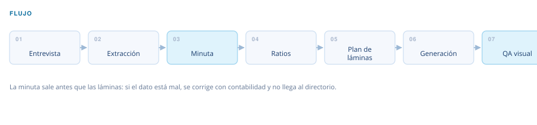

Automatización financiera · Financial Executive Report V4.2
Reporte ejecutivo financiero
De un PDF de estados financieros a un reporte de directorio en una sola corrida.
El problema
Armar el reporte mensual de directorio es trabajo de tijera: extraer cifras de un PDF o un Excel, recalcular ratios, redactar los comentarios y maquetar las láminas. Se repite en cada cierre y consume los días que deberían ir al análisis.
Entra
Balance general y estado de resultados en PDF o Excel, uno o varios periodos.
Sale
Presentación en PPTX o HTML interactivo, más una minuta contable en DOCX con las observaciones detectadas.
El flujo

Qué decide y cómo
Sector
Nueve módulos sectoriales, cada uno con sus ratios y sus umbrales. El sector se detecta del archivo y se confirma con el usuario.
Modo
Diagnóstico completo o reporte de seguimiento mensual: cambian la profundidad y el juego de láminas.
País
Módulo de normativa contable peruana para las observaciones de la minuta.
Control de calidad
Antes de generar las láminas produce una minuta con las inconsistencias contables encontradas, pensada para coordinarlas con el área contable. Sobre la salida corre una revisión visual: cifras contra fuente, formato de negativos y colisiones de texto.
Arquitectura
- 6 scripts de extracción, cálculo y generación
- 13 plantillas de lámina
- 9 módulos sectoriales
- 1 módulo de normativa por país
Qué construí
Diseñé el flujo completo, las fórmulas de ratios por sector, los umbrales de diagnóstico y las plantillas de salida.
¿Un flujo así para tu proceso?
Este nació de un cuello de botella real. Si tienes un proceso financiero que se repite cada mes, probablemente se pueda sistematizar igual.